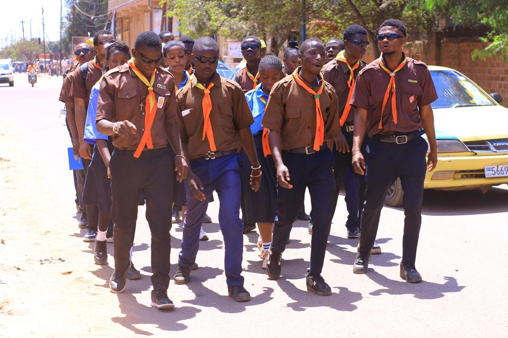
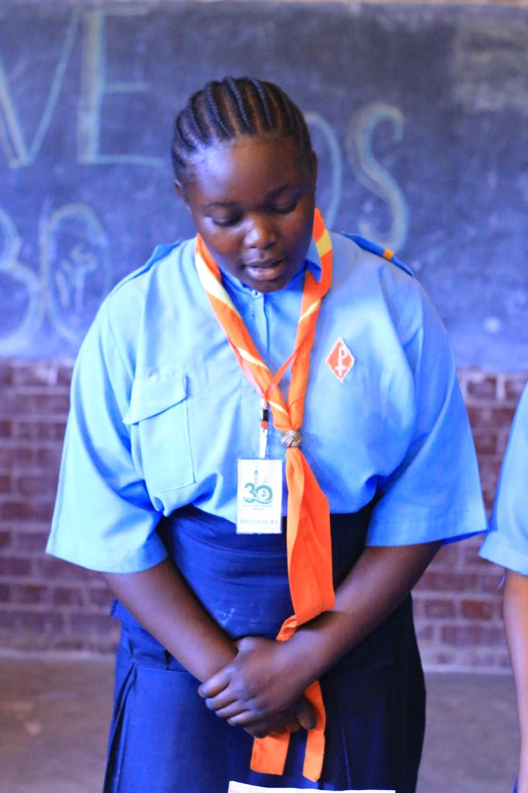
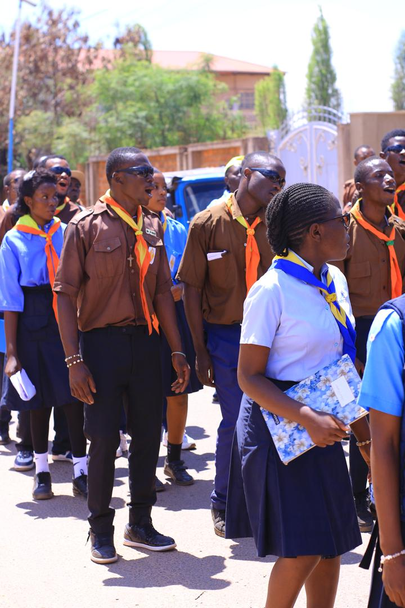
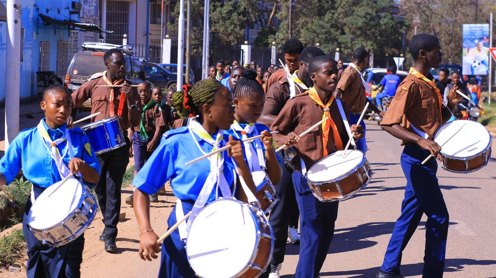
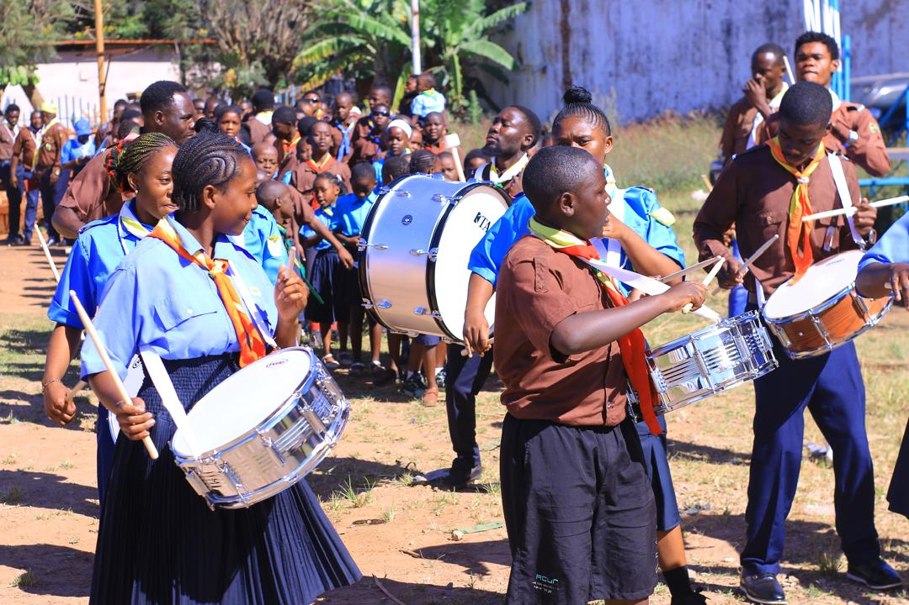
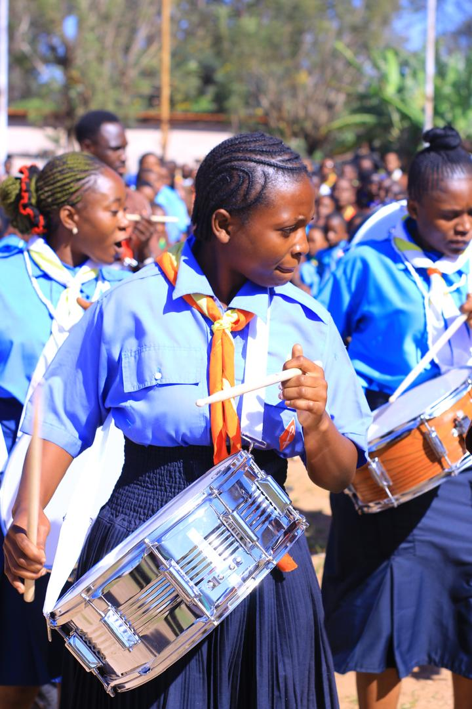
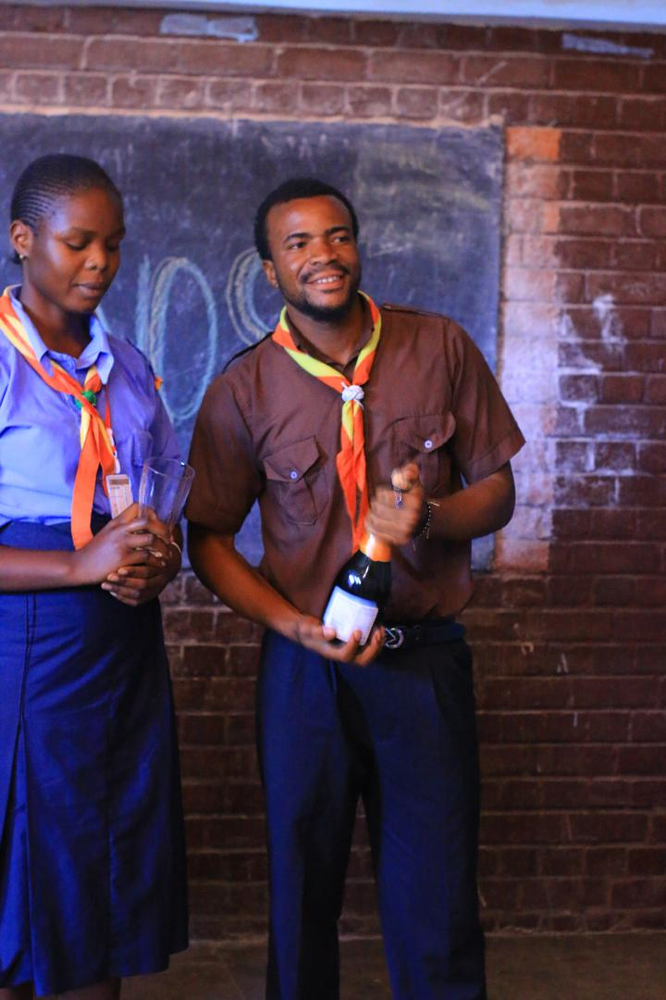
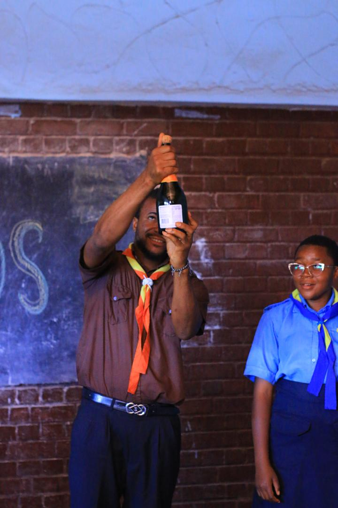
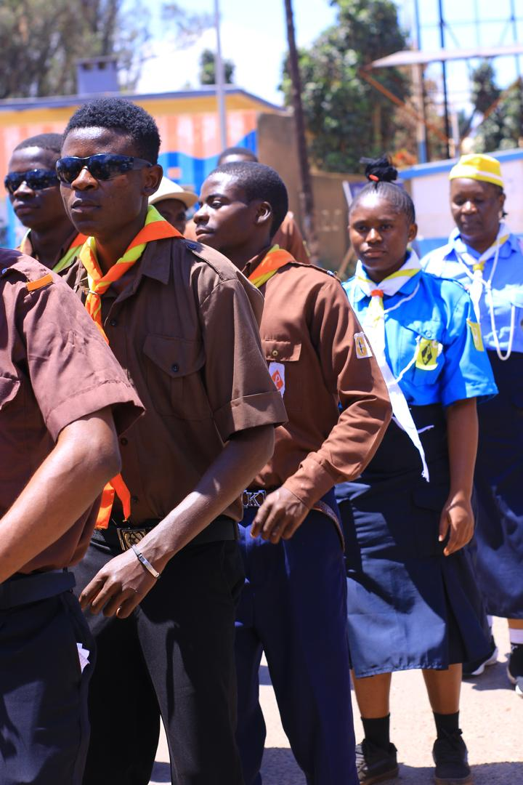
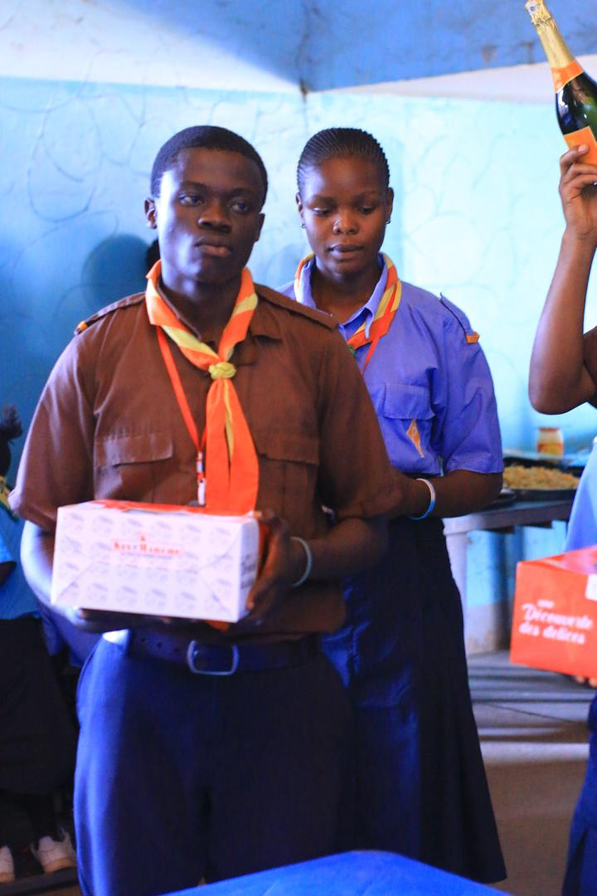

Une semaine de foi, de fraternité et d'aventure dans la nature, avec le Groupe KIRO BAKANJA.
📍 Cité de Nzilo · 10 — 16 Août 2026
Une semaine complète de bivouac, du lundi au dimanche.
Territoire de Mutshatsha, non loin de Kolwezi, Lualaba.
Décanat de Kolwezi, Paroisse Sainte Barbe et Saint Éloi.
30 000 Fc par membres.
Le Bivouac est le grand rassemblement annuel du groupe Kiro BAKANJA de la paroisse Sainte Barbe et Saint Éloi. Une semaine loin du quotidien, rythmée par la prière, les jeux, les chants, les feux de camp et la vie communautaire.
C'est l'occasion de grandir ensemble dans la foi, de tisser des liens fraternels et de vivre pleinement l'esprit chrétien du mouvement KIRO Congo.









